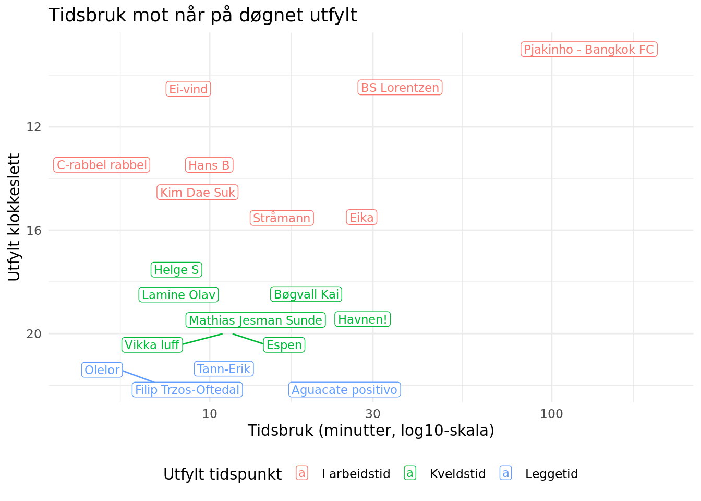
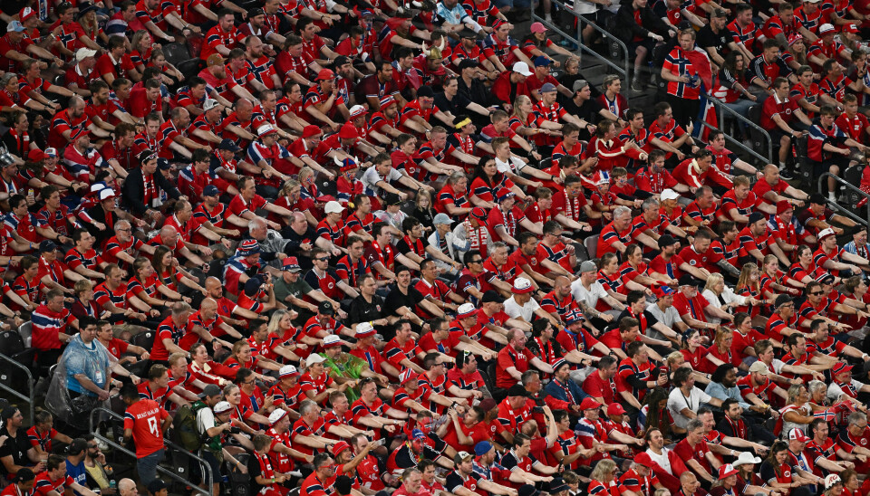
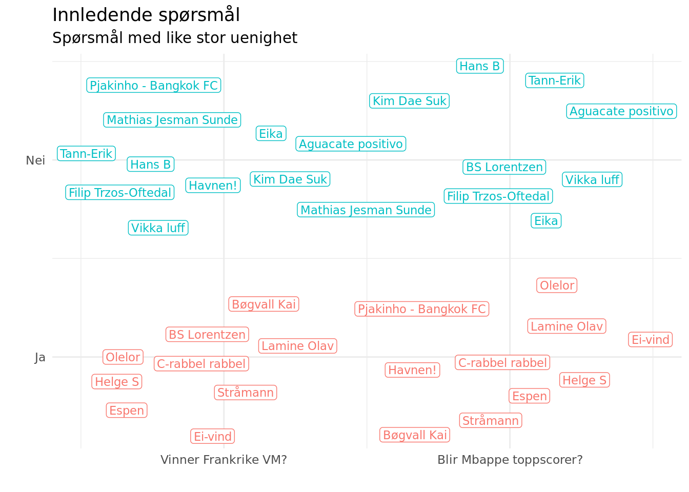
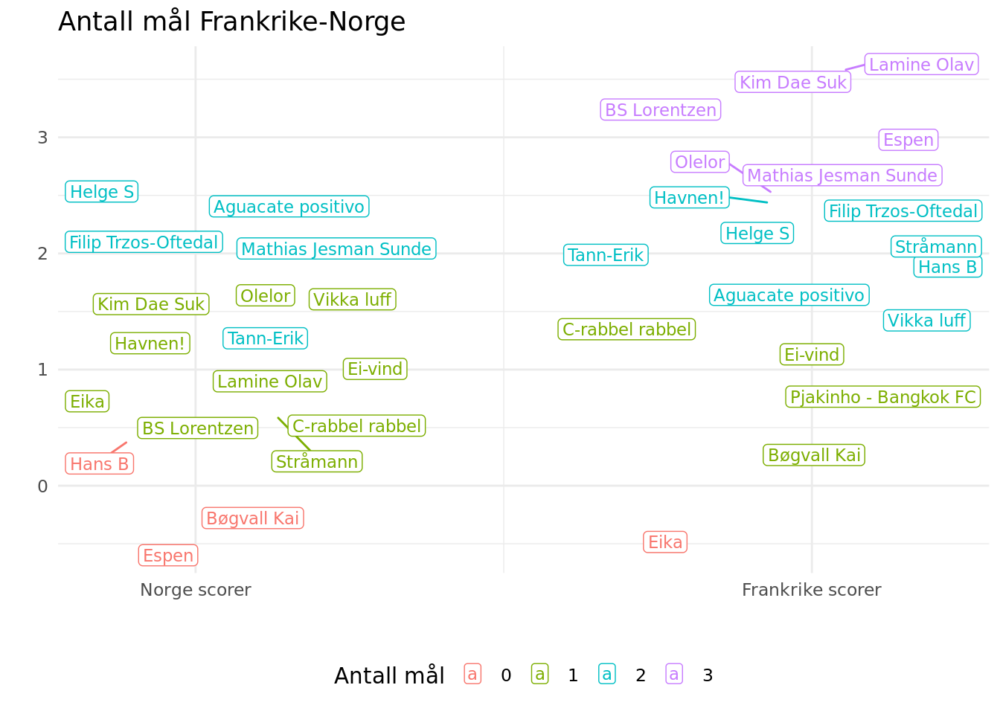
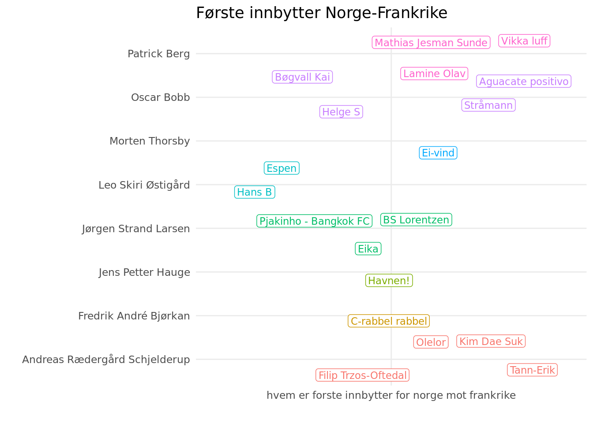
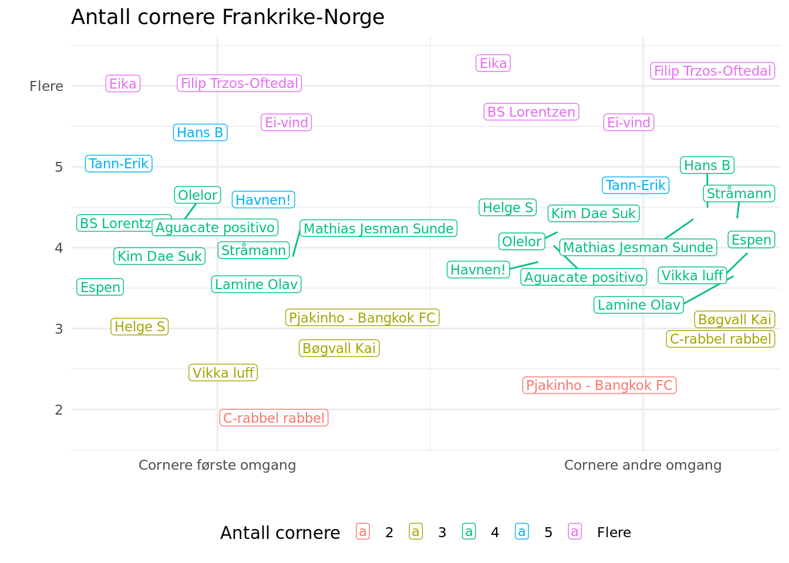
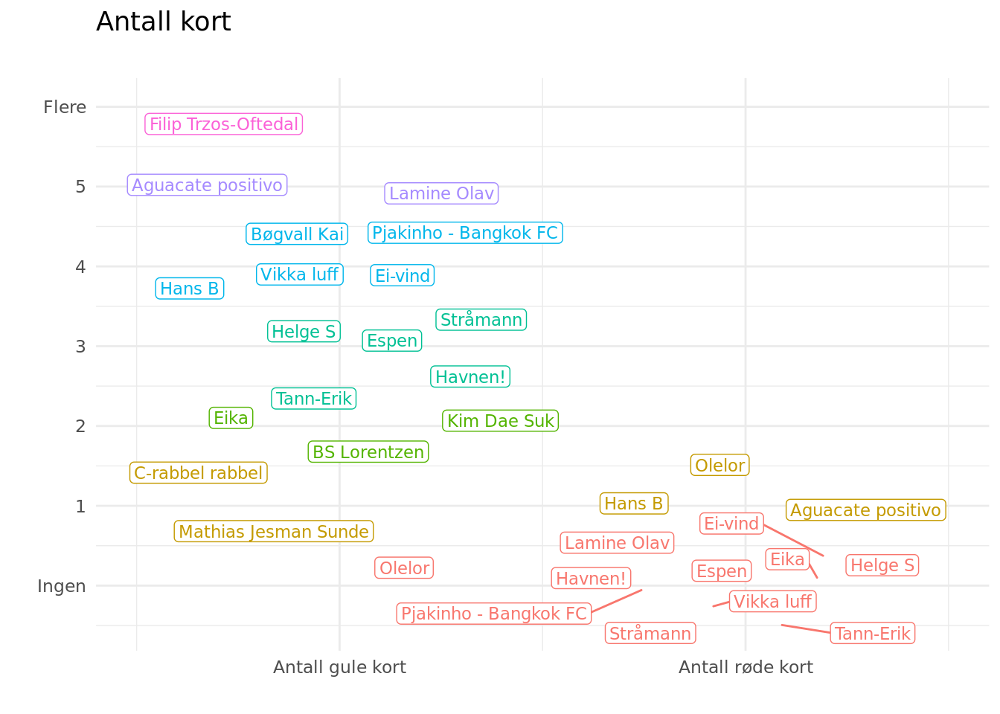
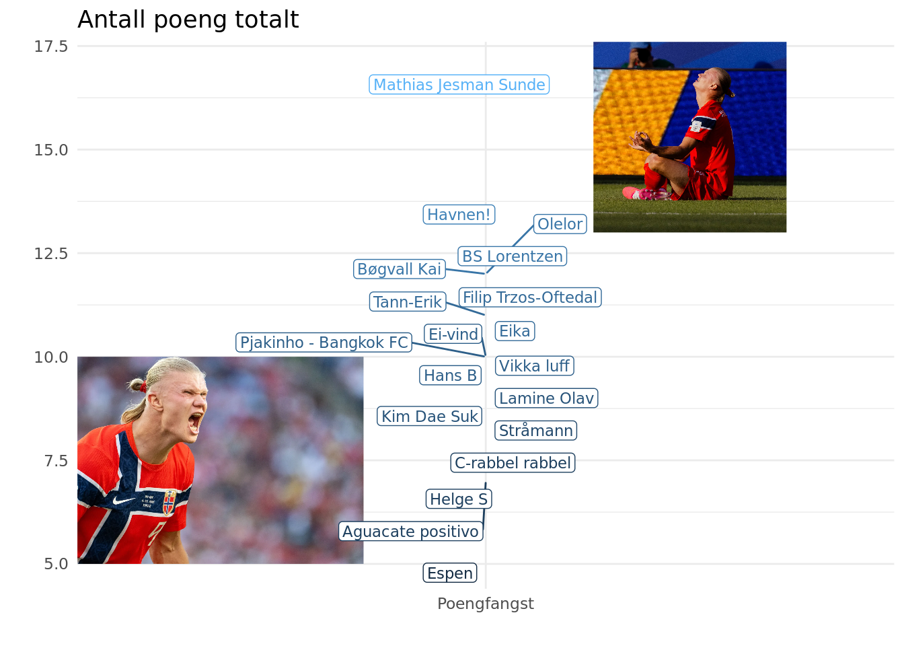
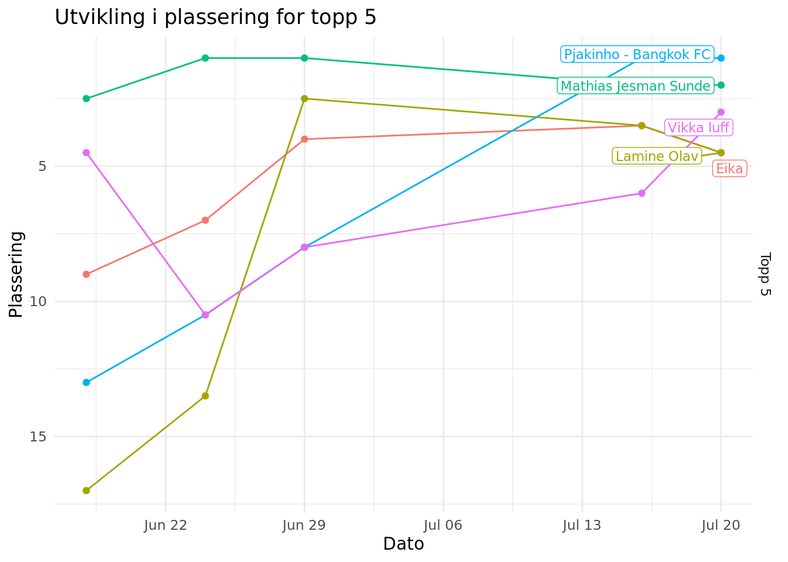

⚽ VM-tuppekunkurranse – Resultater 🚣 🏆

Denne rapporten viser resultatene fra VM-tuppekunkurransen. Utrolig avansert analyse er anvendt for å tolke innsendte tippelapper. Analysene tyter ut i figurer og tabeller i det følgende notatet. Si gjerne fra om du har forslag til analyser eller ser feil i dataene. Oppdaterte analyser kommer etter Irak-Norge.
God lesning!
Notatet er oppdatert 25. juni 2026
Alle svar som er levert inn ligger her: Tippelapper
Her er pekere til tidligere versjoner av rapporten:
1 Datagrunnlag

Her kommer det sylskarpe analyser av svarene som er sendt inn. Analysene handler mest om å sette opp foreløpig stilling i tippekonkurransen, holde motet oppe for de som ikke har fått så mange rett foreløpig og å la de som har tippet ulikt få vite det. Den siste kan kanskje generere små bets foran TV-skjermen?
Vi har fått inn 19 svar. Figuren viser hvor lang tid respondenten har brukt på utfylling og når på døgnet dette er gjort. På grunn av at en person har brukt veldig over 100 minutter i arbeidstid, så er x-aksen på logaritmisk skala. Noen fylte også ut etter leggetid. Husk ordtaket om at når munnteip er på, unngå skjermlys blå.
2 Innledning
Angående Frankrike-kampen, så kan to interessante spørsmål utledes fra de avgitte svarene. Her er det jammen mulig å diskutere seg hes. Vinner Frankrike VM og blir Mbappe toppscorer? De mest frankofile fyrene tror ja på begge.

3 Gruppespill
Grupperinger er en grunnleggende måte mennesker organiserer verden på. Vi deler inn objekter, fenomener og mennesker i grupper for å skape oversikt, forstå sammenhenger og gjøre kommunikasjon enklere. Slike inndelinger finnes i mange former og brukes i ulike sammenhenger.
Kort sagt er grupperinger et universelt verktøy for å skape orden i kompleksitet. De gjør det mulig å se mønstre, trekke konklusjoner og kommunisere på en effektiv måte, enten det gjelder dagligdagse valg eller avansert faglig arbeid.
Dypdykk i hver gruppe kommer etter hvert som gruppespillet utfolder seg. Her ser vi på hvilke grupper av respondenter som har svart hva i hvilke grupper, gruppert etter antall. Det er til å bli svimmel av.
3.1 Dypdykk gruppe I-L
Den neste tabellen viser et innblikk i grupperesultatene som var mest typiske og mest utypiske i tippekupongene. I den første tabellen vises de grupperesultatene som flest har tippet.
Gruppe | Mest vanlig rekkefølge | Hvem |
|---|---|---|
I | Frankrike, Norge, Senegal, Irak | Hans B, Eika, Helge S, Olelor, Filip Trzos-Oftedal, Ei-vind, BS Lorentzen, C-rabbel rabbel, Havnen!, Mathias Jesman Sunde, Aguacate positivo, Stråmann, Lamine Olav |
J | Argentina, Østerrike, Algerie, Jordan | Hans B, Eika, Filip Trzos-Oftedal, BS Lorentzen, C-rabbel rabbel, Kim Dae Suk, Havnen!, Espen, Aguacate positivo, Pjakinho - Bangkok FC, Lamine Olav |
K | Portugal, Colombia, DR Kongo, Usbekistan | Helge S, Olelor, Filip Trzos-Oftedal, Ei-vind, C-rabbel rabbel, Kim Dae Suk, Havnen!, Mathias Jesman Sunde, Stråmann, Vikka luff, Tann-Erik, Lamine Olav |
L | England, Kroatia, Ghana, Panama | Hans B, Helge S, Filip Trzos-Oftedal, Ei-vind, C-rabbel rabbel, Kim Dae Suk, Havnen!, Mathias Jesman Sunde, Pjakinho - Bangkok FC, Stråmann, Bøgvall Kai, Vikka luff, Tann-Erik |
I den neste tabellen vises de grupperesultatene som færrest har valgt. Husk å si fra til de som har tippet mest idiotisk!
Gruppe | Mest uvanlige rekkefølge | Hvem |
|---|---|---|
I | Norge, Frankrike, Senegal, Irak | Tann-Erik |
J | Østerrike, Argentina, Algerie, Jordan | Tann-Erik |
K | Colombia, Portugal, DR Kongo, Usbekistan | BS Lorentzen, Aguacate positivo, Pjakinho - Bangkok FC |
L | Kroatia, England, Panama, Ghana | Espen |
4 Frankrike-kampen
Frankrike er et land i Vest-Europa, kjent for sin rike historie, kultur og innflytelse på kunst, politikk og mat. Hovedstaden Paris er et av verdens mest besøkte reisemål, berømt for severdigheter som Eiffeltårnet, Louvre og Notre-Dame. Vi teller heldigvis ikke reisemål i fotball-VM. Hva blir antallet spillemål?

Landet har spilt en viktig rolle i Europas historie, blant annet gjennom den franske revolusjonen på slutten av 1700-tallet, som fikk stor betydning for utviklingen av demokrati og menneskerettigheter. I dag er Frankrike en av Europas største økonomier og en sentral aktør i EU. Hvem av Norges benkestartere får mulighet å bli en sentral aktør i kampen?

Fransk er det offisielle språket, og kulturen er kjent for blant annet vin, ost, mote og gastronomi. Landskapet i Frankrike er variert, fra Alpene og Pyreneene til vinområder og lange kystlinjer. Dette gjør landet til et populært reisemål både for natur og storbyliv. Denne teksten er så pass tynn at jeg ikke finner en god overgang til antall cornere. Her er uansett svarene:

Frankrike har en rik og suksessfull fotballhistorie, og regnes som en av de største fotballnasjonene i verden.
Fotballen kom til Frankrike på slutten av 1800-tallet, og det franske fotballforbundet (FFF) ble etablert i 1919. Landslaget deltok i det første verdensmesterskapet i 1930, men hadde i mange år varierende resultater.
På 1980-tallet fikk Frankrike sitt første store gjennombrudd, ledet av stjernespilleren Michel Platini. Laget vant EM i 1984 på hjemmebane, noe som var landets første store trofé. Denne perioden etablerte Frankrike som en seriøs fotballnasjon.
Den største suksessen kom på slutten av 1990-tallet og begynnelsen av 2000-tallet. Med spillere som Zinedine Zidane, Thierry Henry og Didier Deschamps vant Frankrike VM i 1998 (på hjemmebane) og EM i 2000. Dette laget regnes som et av de beste i fotballhistorien.
Frankrike fortsatte å være en toppnasjon også senere. De nådde VM-finalen i 2006, og fikk en ny storhetstid med en ny generasjon spillere som Kylian Mbappé, Antoine Griezmann og Paul Pogba:
VM-gull i 2018 og VM-finale i 2022 (tap mot Argentina etter straffer).
I 2006 endte finalen med et rødt kort til Frankrike. Skjer det i kampen mot Norge?

5 Topp og bunnlister
Håper du har lært noe spennende om Norges motstander. Nå skal vi lære litt om hverandres motstand. Her er poenglistene:

Det er spennende i toppen. Neste figur viser utviklingen i plassering for topp 5. Noen klatrer og noen er stabile.
